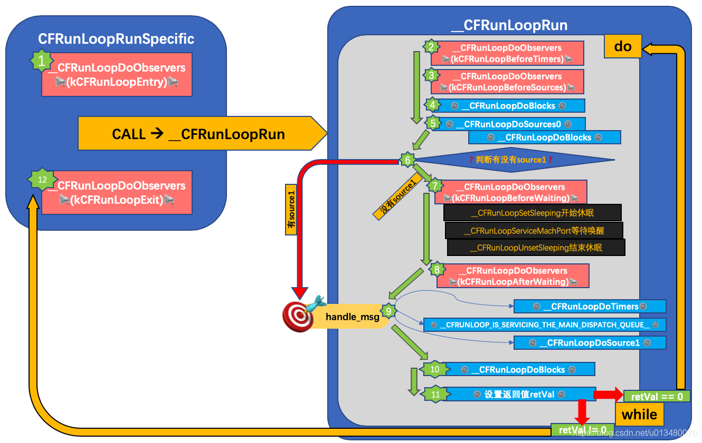

runloop：通过系统内部维护的循环进行事件/消息管理的一个对象。runloop实际上就是一个do...while循环，有任务时开始，无任务时休眠。
其本质是通过mach_msg()函数接收、发送消息。
RunLoop 与线程的关系：
-
RunLoop的作用就是来管理线程的，当线程的RunLoop开启后，线程就会在执行完任务后，处于休眠状态，随时等待接受新的任务，不会退出。
-
- 只有主线程的
RunLoop是默认开启的，其他线程的RunLoop需要手动开启。所以当程序开启后，主线程会一直运行，不会退出。
runloop 事件循环机制内部流程

RunLoop主要涉及五个类：
CFRunLoop：RunLoop对象、
CFRunLoopMode：五种RunLoop运行模式、
CFRunLoopSource：输入源/事件源，包括Source0 和 Source1
CFRunLoopTimer：定时源，就是NSTimer、
CFRunLoopObserver：观察者，用来监听RunLoop。
-
CFRunLoop：RunLoop对象
-
CFRunLoopMode：RunLoop运行模式，有五种：
-
kCFRunLoopDefaultMode：默认的运行模式，通常主线程是在这个 Mode 下运行的。
-
UITrackingRunLoopMode：界面跟踪 Mode，用于 ScrollView 追踪触摸滑动，保证界面滑动时不受其他 Mode 影响。
-
UIInitializationRunLoopMode：在刚启动 App 时第进入的第一个 Mode，启动完成后就不再使用。
-
GSEventReceiveRunLoopMode：接受系统事件的内部 Mode，通常用不到。
-
kCFRunLoopCommonModes：是一个伪模式，可以在标记为CommonModes的模式下运行，RunLoop会自动将_commonModeItems里的 Source、Observer、Timer 同步到具有此标记的Mode里。
-
CFRunLoopSource：输入源/事件源，包括Source0 和 Source1两种：
-
Source1：基于mach_Port，处理来自系统内核或其它进程的事件，比如点击手机屏幕。
-
Source0 ：非基于Port的处理事件，也就是应用层事件，需要手动标记为待处理和手动唤醒RunLoop。
-
简单举例：一个APP在前台静止，用户点击APP界面，屏幕表面的事件会先包装成Event告诉source1(mach_port)，source1唤醒RunLoop将事件Event分发给source0，由source0来处理。
-
CFRunLoopTimer：定时源，就是NSTimer。在预设的时间点唤醒RunLoop执行回调。因为它是基于RunLoop的，因此它不是实时的（就是NSTimer 是不准确的。 因为RunLoop只负责分发源的消息。如果线程当前正在处理繁重的任务，就有可能导致Timer本次延时，或者少执行一次）。
-
CFRunLoopObserver：观察者，用来监听以下时间点：CFRunLoopActivity
-
kCFRunLoopEntry：RunLoop准备启动
-
kCFRunLoopBeforeTimers：RunLoop将要处理一些Timer相关事件
-
kCFRunLoopBeforeSources：RunLoop将要处理一些Source事件
-
kCFRunLoopBeforeWaiting：RunLoop将要进行休眠状态,即将由用户态切换到内核态
-
kCFRunLoopAfterWaiting：RunLoop被唤醒，即从内核态切换到用户态后
-
kCFRunLoopExit：RunLoop退出
-
kCFRunLoopAllActivities：监听所有状态
各数据结构之间的联系：
-
1：Runloop和线程是一对一的关系
-
2：Runloop和RunloopMode是一对多的关系
-
3：RunloopMode和RunloopSource是一对多的关系
-
4：RunloopMode和RunloopTimer是一对多的关系
-
5：RunloopMode和RunloopObserver是一对多的关系
为什么 main 函数能够保持一直存在且不退出？
在 main 函数内部会调用 UIApplicationMain 这样一个函数，而在UIApplicationMain内部会启动主线程的 runloop，可以做到有消息处理时，能够迅速从内核态到用户态的切换，立刻唤醒处理，而没有消息处理时通过用户态到内核态的切换进入等待状态，避免资源占用。因此 main 函数能够一直存在且不退出。